Shinsegae Duty Free
Content Production
From Vision to Visual
2025년에는 인천국제공항 면세점을 배경으로 브랜드 영상을
제작했으며, 2026년에는 모델 KYOKA의
캠페인 비주얼 리터칭을 진행했습니다. 촬영 기획부터 현장 프로덕션,
후반 작업까지 각 콘텐츠의 목적에 맞는 비주얼을 완성했습니다.
신세계면세점 만의 경험은
어떻게 시작될까?
신세계면세점이 전달하고자 하는 브랜드 경험을 하나의 흐름으로 보여주기 위해 실제 이용자의 동선을 기반으로 촬영을 계획했습니다. 공간을 탐색하고 브랜드를 발견하며 제품을 경험하는 순간들이 자연스럽게 이어질 수 있도록 시퀀스를 설계했습니다.
A Journey Begins at the Airport
신세계면세점이 위치한 인천국제공항 제1터미널을 주요 촬영지로 선정했습니다. 실제 이용자가 마주하는 공간과 동선을 중심으로 촬영을 진행하여 브랜드 경험이 자연스럽게 이어질 수 있는 배경을 구성했습니다.
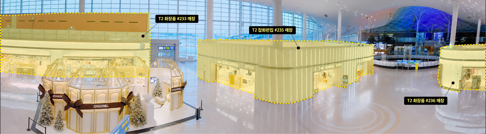
Following the Journey
실제 이동 흐름을 따라 주요 브랜드와 제품을 순차적으로 담아냈습니다. 공간의 분위기와 쇼핑의 리듬을 하나의 시퀀스로 연결하여 신세계면세점만의 경험이 자연스럽게 전달될 수 있도록 구성했습니다.
여행의 격을 높이는 신세계면세점을
우아하고 당당한 두 모델의
모습을 통해 보여줍니다.
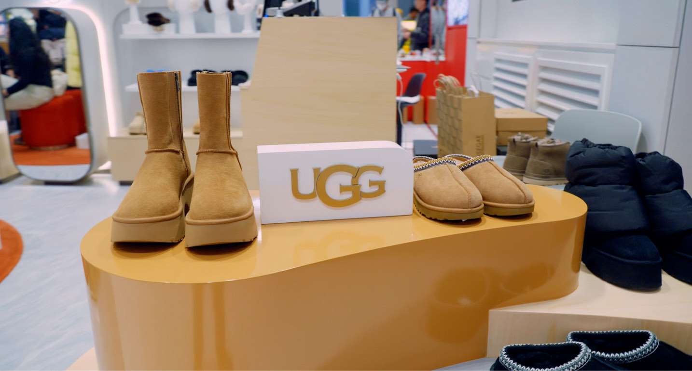
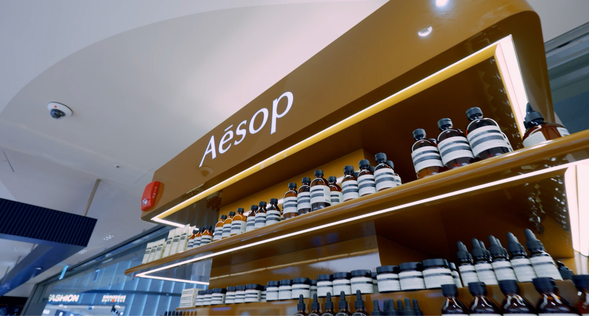
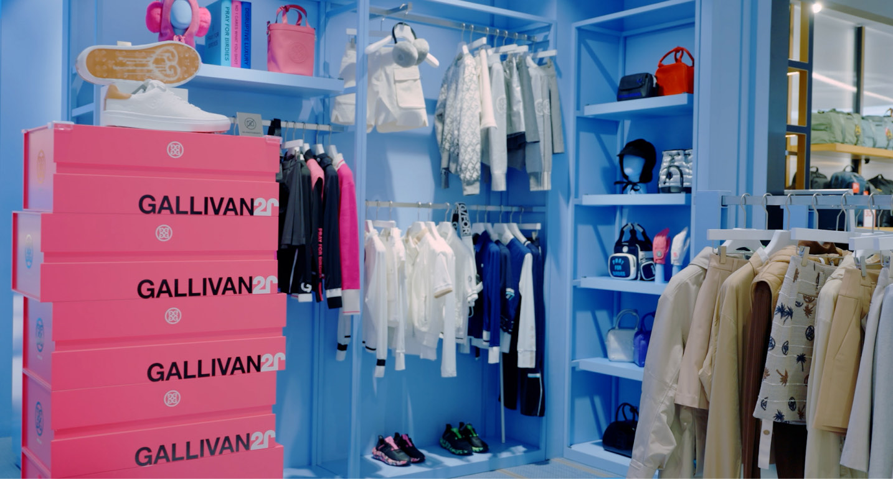
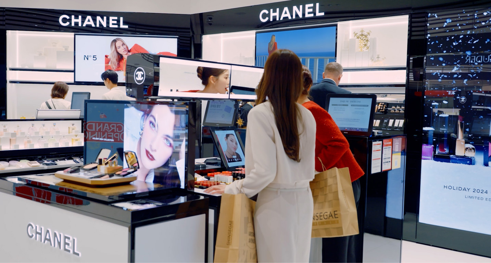
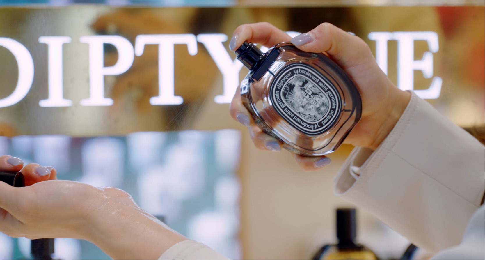
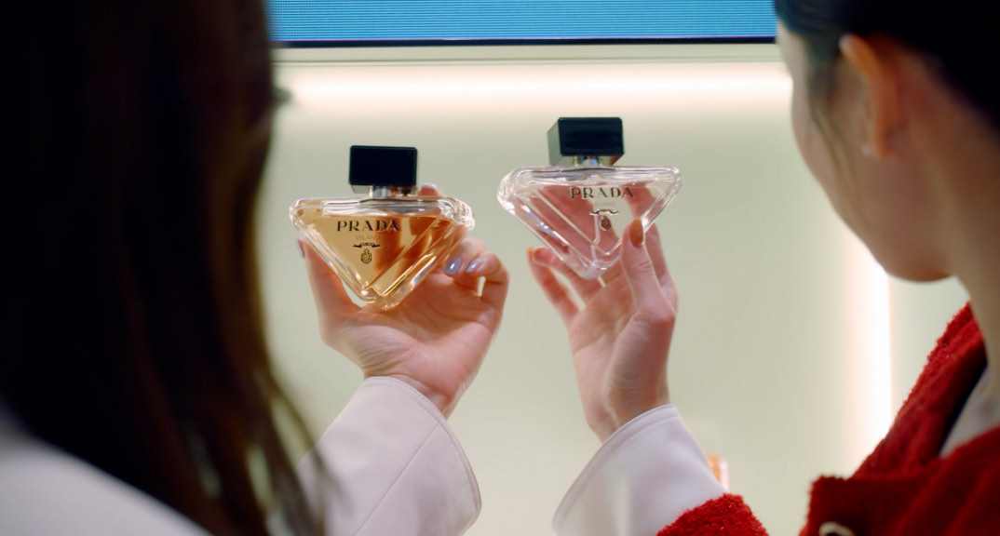
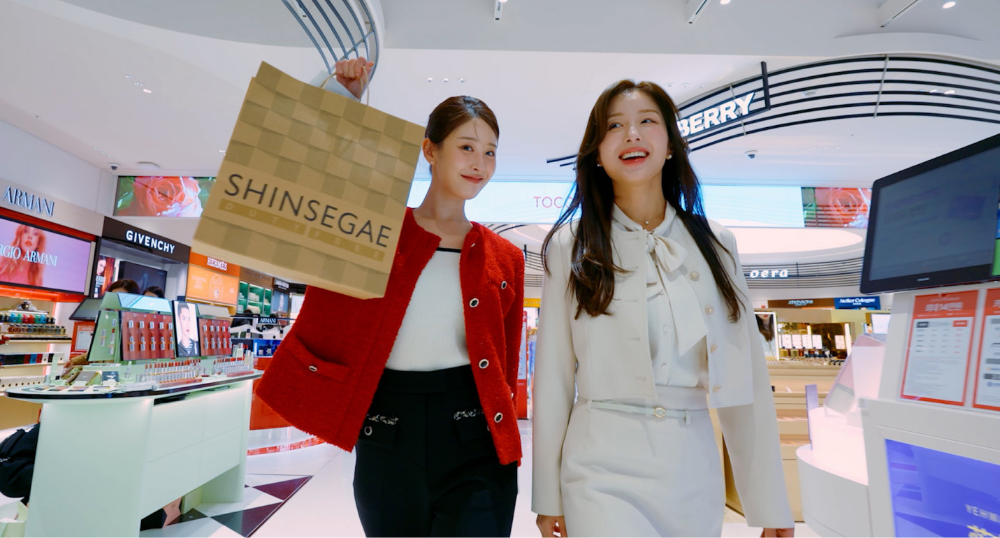
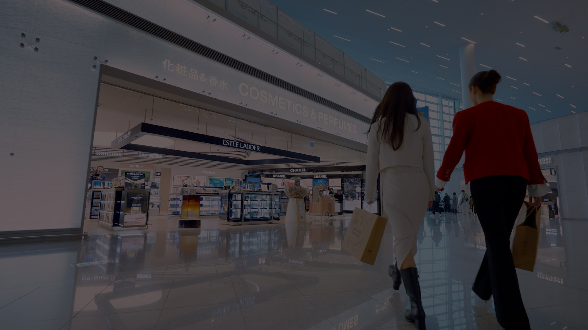
캠페인 비주얼의 완성도는 어디에서 결정될까?
모델 KYOKA의 캠페인 이미지를 브랜드 톤에 맞춰 리터칭했습니다.
피부 표현과 컬러 밸런스, 전체적인 톤을 섬세하게 보정하여 촬영 원본의
분위기를 유지하면서도 브랜드가 의도한 비주얼을 완성했습니다.
Refining Every Detail
모델 KYOKA의 캠페인 이미지를 브랜드가 전달하고자 하는 분위기에 맞춰 리터칭했습니다. 인물의 자연스러운 표정과 피부 표현, 컬러 밸런스를 세심하게 보정하여 촬영 원본의 무드를 유지하면서도 브랜드의 아이덴티티가 더욱 선명하게 드러날 수 있도록 완성했습니다.
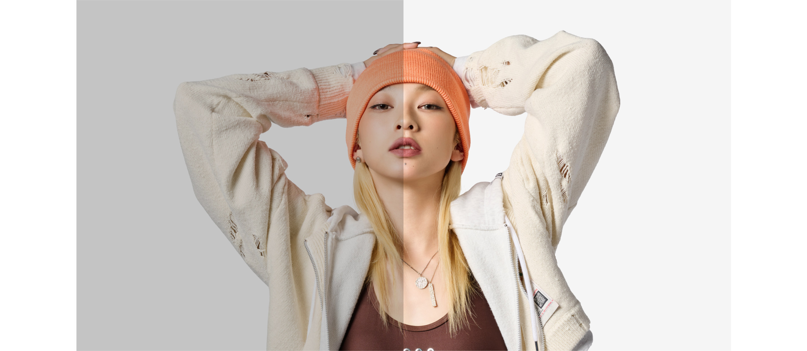
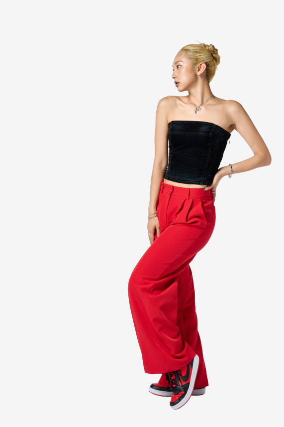
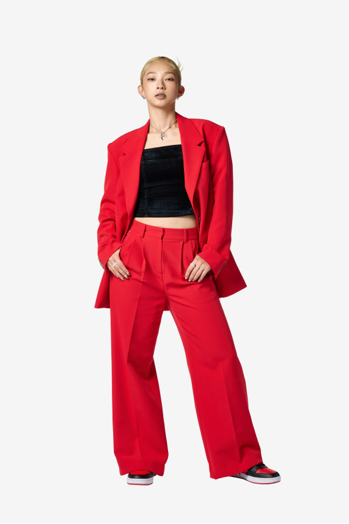
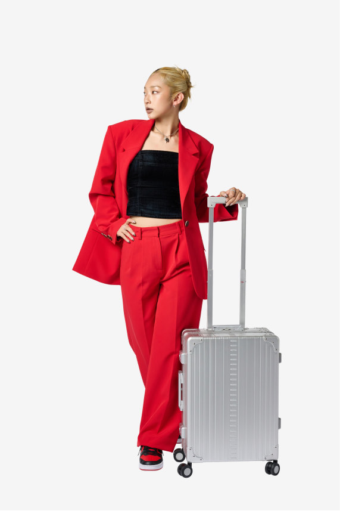
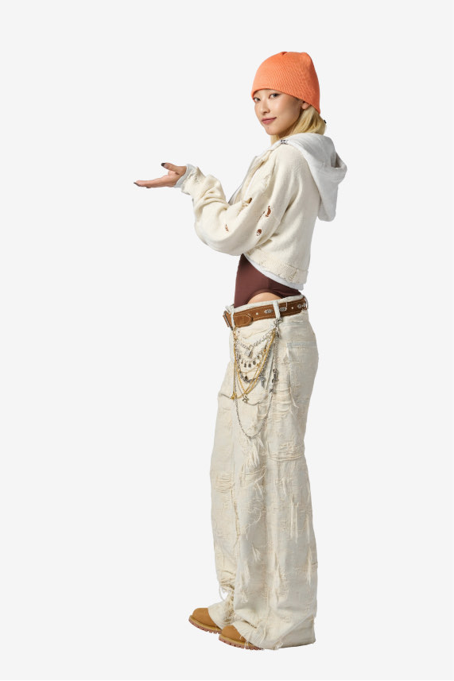
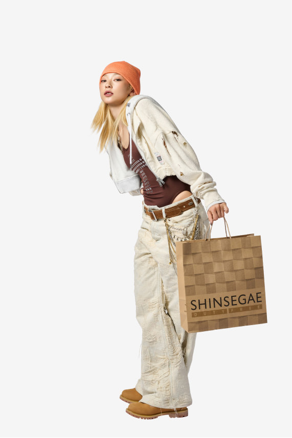
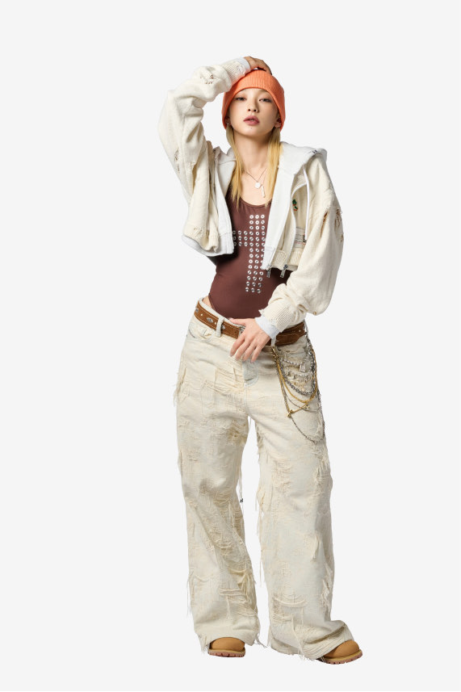
- Creative Director
- Ryan JW Kim
- Project Manager
- Park Min Jun
- Art Direction
- FoodBook 945
- Design / Compositing
- Ahn Jeong Yeol
- 3D Animation
- PL2 Production
- Client
- Samsung / SmartThings